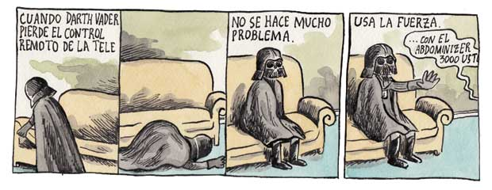

The five boxing wizards jump quickly
Dijous 25 de DESEMBREThe Earth is the only world known so far to harbor life. There is nowhere else, at least in the near future, to which our species could migrate. Visit, yes. Settle, not yet. Like it or not, for the moment the Earth is where we make our stand.
From this day forward, Flight Control will be known by two words: 'Tough' and 'Competent.' Tough means we are forever accountable for what we do or what we fail to do. We will never again compromise our responsibilities. Every time we walk into Mission Control we will know what we stand for. Competent means we will never take anything for granted. We will never be found short in our knowledge and in our skills. Mission Control will be perfect. When you leave this meeting today you will go to your office and the first thing you will do there is to write 'Tough and Competent' on your blackboards. It will never be erased. Each day when you enter the room these words will remind you of the price paid by Grissom, White, and Chaffee. These words are the price of admission to the ranks of Mission Control.
Pack my box with five dozen liquor jugs
It's just mind-blowingly awesome. I apologize, and I wish I was more articulate, but it's hard to be articulate when your mind's blown—but in a very good way.
Look again at that dot. That's here. That's home. That's us. On it everyone you love, everyone you know, everyone you ever heard of, every human being who ever was, lived out their lives. The aggregate of our joy and suffering, thousands of confident religions, ideologies, and economic doctrines, every hunter and forager, every hero and coward, every creator and destroyer of civilization, every king and peasant, every young couple in love, every mother and father, hopeful child, inventor and explorer, every teacher of morals, every corrupt politician, every "superstar," every "supreme leader," every saint and sinner in the history of our species lived there--on a mote of dust suspended in a sunbeam.
It has been said that astronomy is a humbling and character-building experience. There is perhaps no better demonstration of the folly of human conceits than this distant image of our tiny world. To me, it underscores our responsibility to deal more kindly with one another, and to preserve and cherish the pale blue dot, the only home we've ever known.
This is the caption for this image
The size and age of the Cosmos are beyond ordinary human understanding. Lost somewhere between immensity and eternity is our tiny planetary home. In a cosmic perspective, most human concerns seem insignificant, even petty. And yet our species is young and curious and brave and shows much promise. In the last few millennia we have made the most astonishing and unexpected discoveries about the Cosmos and our place within it, explorations that are exhilarating to consider. They remind us that humans have evolved to wonder, that understanding is a joy, that knowledge is prerequisite to survival. I believe our future depends powerfully on how well we understand this Cosmos in which we float like a mote of dust in the morning sky.
Let's light this fire one more time, Mike, and witness this great nation at its best.
The vehicle explodes, literally explodes, off the pad. The simulator shakes you a little bit, but the actual liftoff shakes your entire body and soul.
I saw for the first time the earth's shape. I could easily see the shores of continents, islands, great rivers, folds of the terrain, large bodies of water. The horizon is dark blue, smoothly turning to black. . . the feelings which filled me I can express with one word—joy.
The view of the Earth from the Moon fascinated me—a small disk, 240,000 miles away. It was hard to think that that little thing held so many problems, so many frustrations. Raging nationalistic interests, famines, wars, pestilence don't show from that distance.
A good rule for rocket experimenters to follow is this: always assume that it will explode.